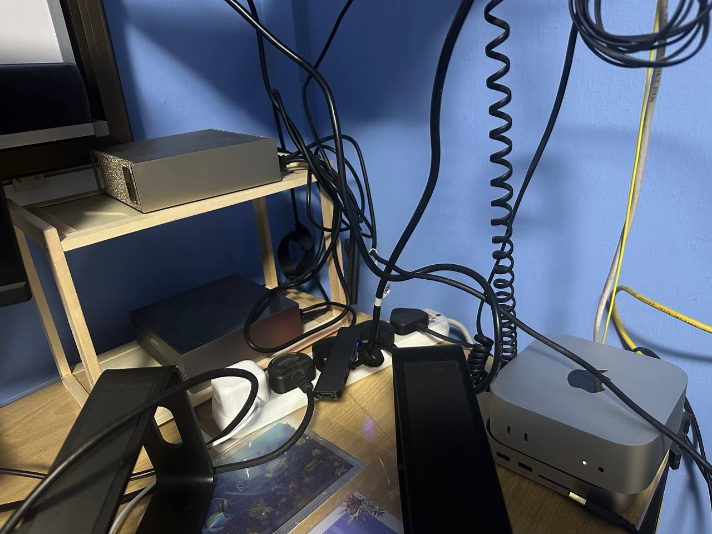

PLUS2026 Singapore Symposium
1 Oct 2026 · 11:05 am
Prompt Fight
AI Brosvs.Insurance Pros
One D&O underwriting worksheet, drafted by an AI agent running on hardware I own. A human still signs it.
Jensen Loke
CEO, Success IT
Today's case study
Sheng Siong
Group
Group
SGX-listed · Supermarket retail
CoverDirectors & Officers
LimitS$10m
Claims historyNone
Current coverNew policy
SourcesPublic filings only
Numbers in code · Words in the model · Judgement with the human01 / 06
01Your speaker
02JL
Jensen Loke · Singapore
CEO, product builder and community organiser
I design products, workflows and teams that make complex services work better.
Across consumer and corporate digital products, the goal has stayed the same: use technology to solve real business problems and improve outcomes.
Consumer productsDBS digital banking
Corporate platformsTemasek · Ant Financial · Amazon
NowCEO, Success IT
Community1,000+ Agentic Builders
linkedin.com/in/jensenloke02 / 06
02Where the agent runs
03From desk to model
The agent runs
on my own hardware.

The simple architecture
MacAgent app
and harness
and harness
TailscalePrivate encrypted access
LiteLLMStable API
dgx-current
dgx-current
DGX SparkQwen 3.8 27B
local inference
local inference
Private by defaultThe model backend stays on loopback; remote access stays inside the tailnet.
One stable endpointThe agent does not need to know which inference engine is underneath.
No per-token billResearch runs cost electricity and time, not API spend.
Swap the modelAny OpenAI-compatible model, local or cloud, plugs into the same agent.
Compute · Network · Router · Model03 / 06
03How the agent works
04ANDREW · A Narrative D&O Risk Evaluation Worksheet
Research in parallel.
Price in code.
Code
Gather
Pick the listed company. Market data and candidate annual-report PDFs are fetched once and shared.
→
Model · parallel
Research teams
Market & securitiesFinancialsGovernance & auditShareholdingAdverse news & regulatory
→
Model
Synthesise
A lead underwriter merges the findings into one proposal. Every answer carries a value, a rationale and a source.
→
Human
Review
The underwriter re-sets modifiers and toggles exclusions before anything is priced.
→
Code
Price & refer
The worksheet's rating tables and about 38 referral triggers. Premium, CLEAR or REFER, and the formula shown.
Numbers in codeThe model never does pricing math. The engine reproduces the worksheet's worked example to the cent.
Words in the modelResearch and narrative come with citations. "None identified" is a finding; a blank is not.
Judgement with the humanThe agent refers when it's unsure instead of bluffing a number. An underwriter signs off.
Agent + deterministic engine + human review04 / 06
04Live demo
05Live · Sheng Siong Group
Let's underwrite it.
The brief
InsuredSheng Siong Group Ltd · SGX-listed
CoverDirectors & Officers liability
LimitS$10m
ClaimsNone · new policy, no current cover
InputsAnnual reports, SGX filings, public news
What to watch
1
The research lanesEach team reading filings, with sources as it goes.
2
The cited proposalRisk narrative, modifiers and exclusions, each with its reason.
3
The human reviewWhere I push back on the agent's calls.
4
The price and verdictPremium, CLEAR or REFER, and the formula behind it.
Prompt Fight · PLUS 2026 Singapore Symposium05 / 06
05Scan to connect
06Thank you
Take the agent home.
X · Twitter
@jensenloke
x.com/jensenloke
LinkedIn
Jensen Loke
linkedin.com/in/jensenloke
Open source · GitHub
ANDREW
github.com/jensenloke/andrew-do-worksheet
Prompt Fight · PLUS 2026 Singapore Symposium06 / 06